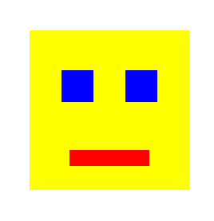
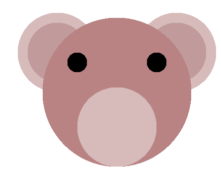

Week 1: Basic Raster Algorithms in Javascript
Chris Tralie
Getting Started
Click here to download the repository of skeleton code for this exercise. You will be editing the file raster.js, and you will run raster.html to view the results
Overview
An image is made up of pixels, which are samples of color. They can be expressed in rgb
Step 1: fillRect
Fill in the method fillRect method of the RasterImage class to fill in a rectangle of a solid color, using only the drawPixel method.
Then, call this method 4 times to draw the following picture:
Step 2: fillCircle
Fill in the method fillCircle to fill in a solid circle, using only the drawPixel method. Note that that a point (x, y) is inside of a circle of radius r at a center of (cx, cy) if
Once this works properly, draw the following picture by calling this method 8 times:
What happens if you switch the order of your method calls after you do this?
Next steps
- Add the capability to translate the canvas by
dxanddy -
Add the capability to scale the canvas by a factor of
scale. Can you scale it so that it stays centered ondxanddy? - How would you deal with layers so that you can draw one thing over another?
- How would you deal with "jaggies" around the edge of a disc, or non-integer coordinates of the rectangles?
Step 3: (For those bored)
Create a method to draw the Sierpiński carpet